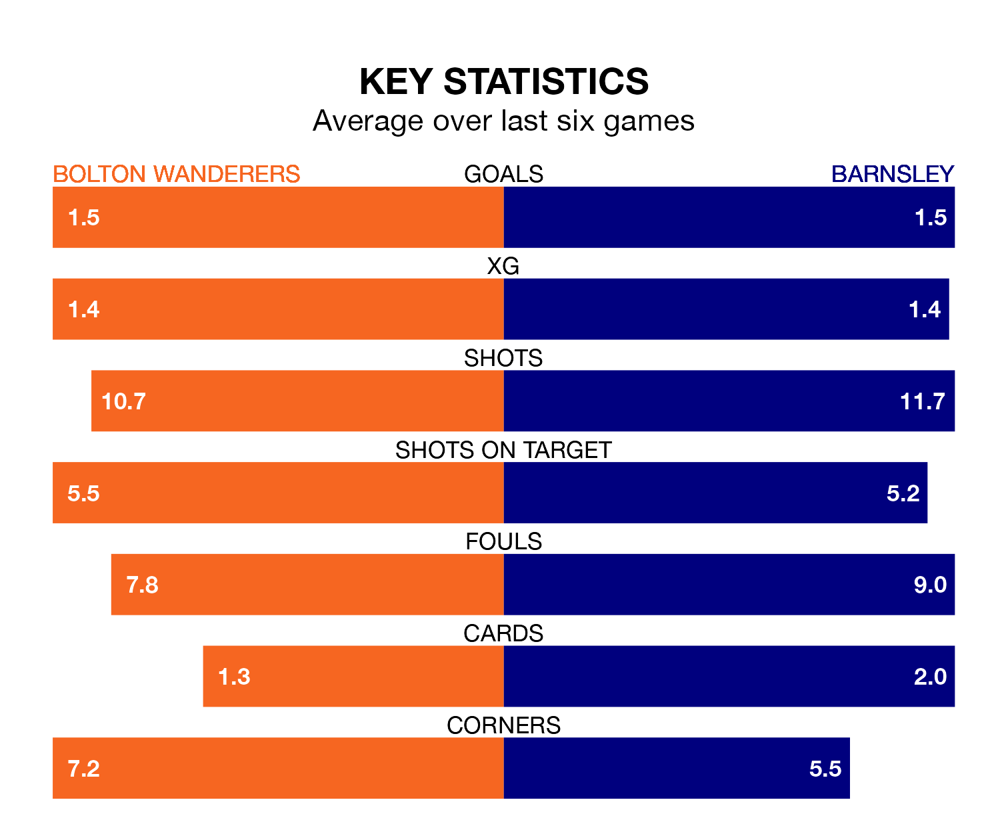

Saturday's match between Bolton Wanderers and Barnsley promises to be one for the neutrals, as two of EFL League One's most free-scoring sides go head-to-head.
Ahead of the game at the University of Bolton Stadium, Bolton and the Tykes sit fourth and joint-second in the goal-scoring charts, with 50 and 52 goals respectively.
Striker Dion Charles leads the way for the home side, having bagged 13 goals in their 27 games to date.
And Devante Cole has been the main man in the opponents' penalty box for Barnsley, with 16 goals.
Bolton are second in the table after 27 games, of which they have won 18 and drawn three, earning 57 points.
Barnsley are three places behind Wanderers in fifth, with 15 wins and seven draws putting them on 52 points.
With Nathan Baxter between the sticks, the hosts can rely on one of the league's safest pair of hands. He has kept 12 clean sheets in his 27 appearances this season, and only one other 'keeper – Portsmouth's Will Norris – has been able to prevent the opposition scoring on more occasions in EFL League One.
In the Tykes's net, Liam Roberts has seven clean sheets in 21 games. He has conceded a goal every 90 minutes, 10% more often than the 101 minutes between goals for Baxter.
In the last 10 years, Bolton and Barnsley have played each other on nine occasions. Bolton won three of them, Barnsley two, and they drew four times.
On average, Bolton scored 1.2 goals and the Tykes 0.8 in those matches.
Their last meeting was on May 19, when Barnsley won 1-0 at home.
Bolton are in fantastic form in EFL League One, with five wins and one loss from their last six games.
With three wins and two draws over that period, the away side's form is worse – they have taken 11 points from 18, compared to Bolton's 15.
Bolton's last match was on January 27, a 4-1 win against Carlisle United, with Kyle Dempsey, Nathanael Ogbeta, Paris Maghoma and Zachary Ashworth getting the goals for Bolton.
Barnsley lost 2-1 against Exeter City last time out, also on January 27, with Mael Durand de Gevigney on the scoresheet.
Saturday's match will be refereed by John Busby, who has taken charge of two EFL League One games so far this season, issuing no red cards and booking seven players. He has awarded one penalty.
The last Barnsley game Busby refereed was the 3-0 loss away at Derby County on November 11. He is yet to oversee a match featuring Bolton this season.
Updated: 15:45 (UTC), 02/02/24